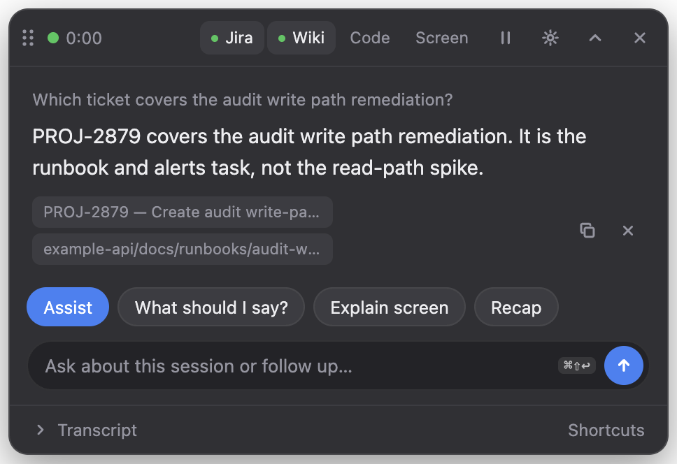

A meeting and study assistant that stays on your Mac.
Clueless listens to calls and lectures, transcribes them on-device, and answers on a hotkey grounded in your own notes, decks, papers or code. Invisible to screen share. Nothing uploaded.

Tailored Personas
Choose your setup in the first-run wizard or switch live from the overlay toolbar's Settings gear without losing your transcript.
One-Key Actions
Answer from the last 90 seconds with ⌘⇧\, draft what to say next with ⌘⇧A, capture and explain your active display with ⌘⇧E, or stream a structured recap with ⌘⇧S. Toggle context sources mid-call with ⌘⌥1–4.
Local & Private by Construction
Audio and transcripts stay in memory and are never written to disk. Prompts go strictly over loopback to Ollama, llama.cpp, LM Studio, a local GGUF file, or Apple Intelligence, backed by hybrid SQLite FTS5 + vector search. Clinical mode disables outbound indexing in code and redacts identifiers on screen (HIPAA-aware, not HIPAA-certified; local inference does not replace participant consent).
Open Source
Clueless is MIT licensed. Read the architecture, start with the contributing guide, or report vulnerabilities privately via SECURITY.md.